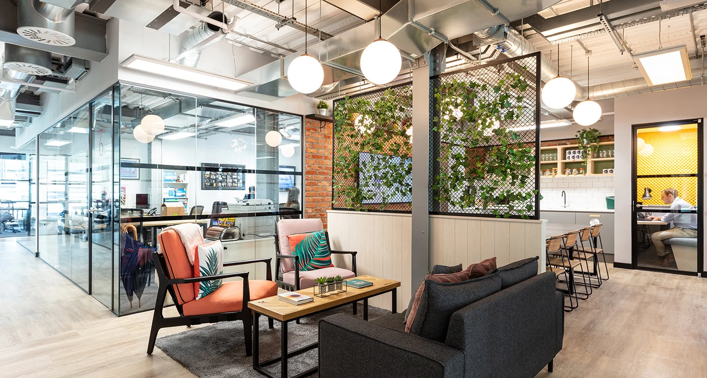

About Us
At DataFlow, we believe data isn’t just numbers—it’s the pulse of innovation. Founded with a vision to empower organizations through intelligent insights, we specialize in Information Technology solutions with a core focus on data science.
Vision
To be the catalyst for data-driven transformation, empowering organizations to unlock intelligence, innovate boldly, and shape a smarter future.
Mission
Our mission is to harness the power of data science and cutting-edge IT solutions to help businesses make smarter decisions, optimize operations, and uncover hidden opportunities. We deliver scalable, secure, and insightful technologies that turn complexity into clarity—driving measurable impact across industries.
Our Working Environment
DataFlow’s workspace blends modern design with smart functionality. Open layouts, collaborative zones, and quiet focus areas create an atmosphere that’s both energizing and efficient. The environment encourages creativity and teamwork, while high-speed infrastructure and ergonomic setups keep productivity flowing. It’s a space where ideas move fast—and breakthroughs happen daily.
DataFlow fosters a culture of curiosity, collaboration, and growth. We value open communication, flexible work styles, and continuous learning. Teams work cross-functionally to solve complex problems, and success is shared across the board. It’s a place where innovation feels natural—and productivity thrives.